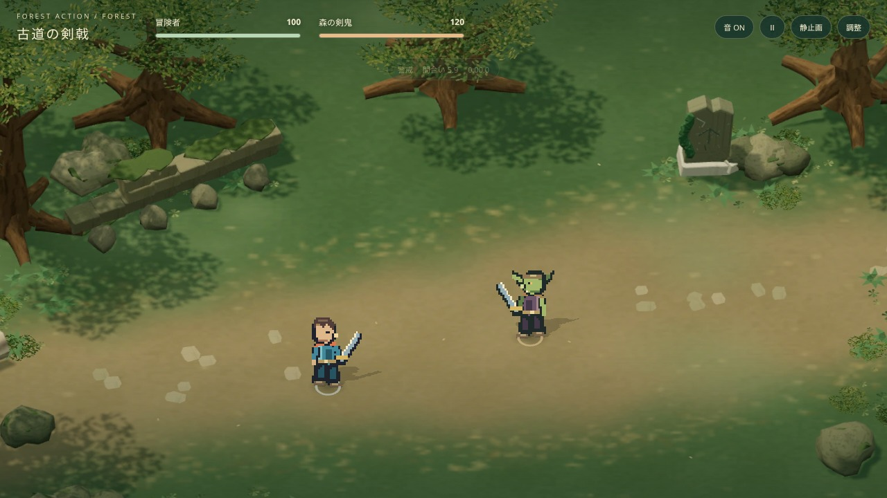
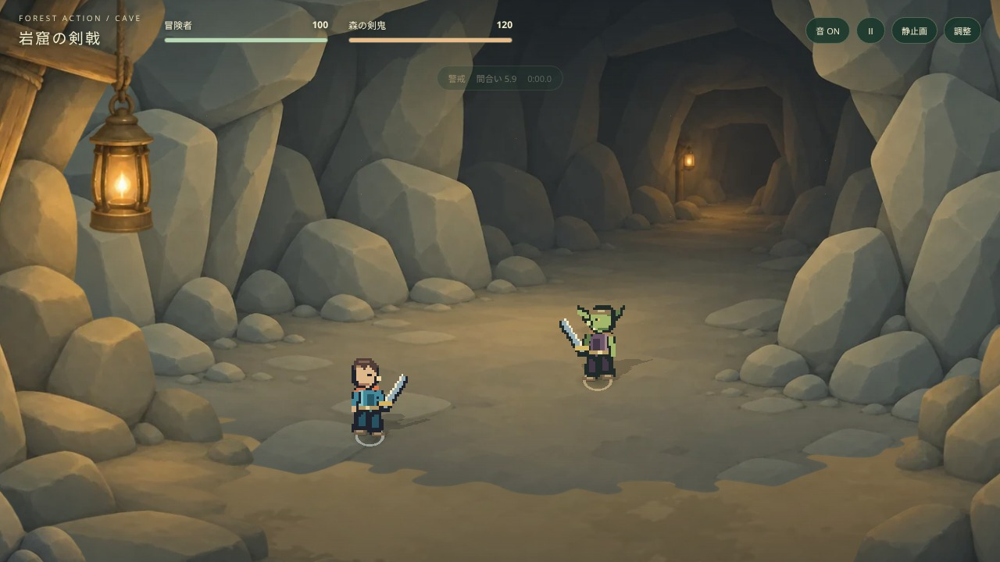
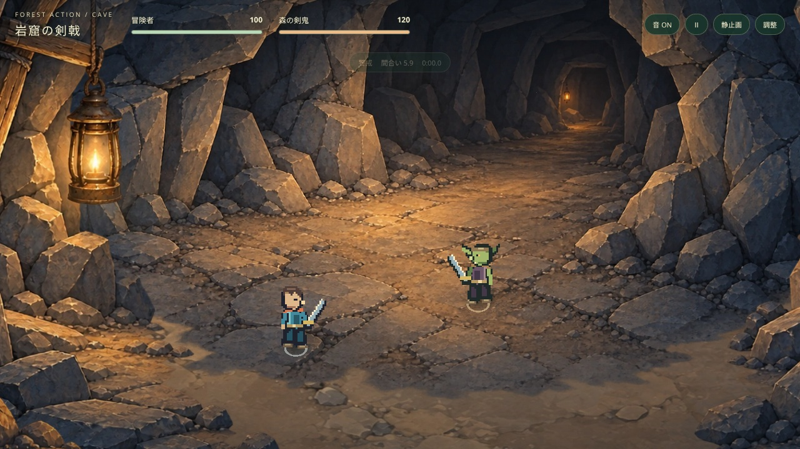
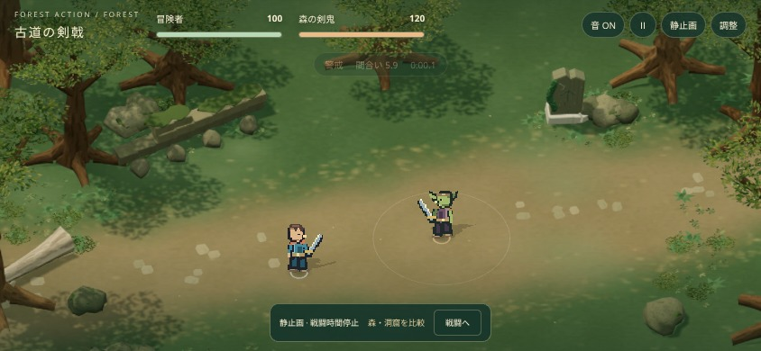
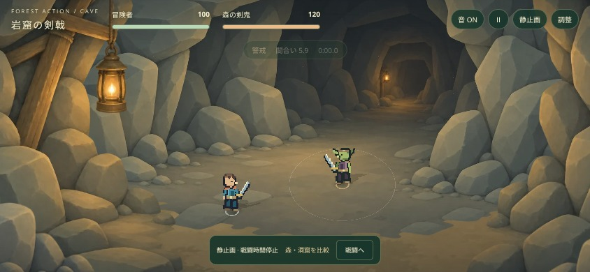

FOREST ACTION / ART GUIDELINE STUDY中央は静かに。細部は周縁へ。
森のあっさりした地面と、大きな形・穏やかな陰影を共通の基準にしました。森の素材は維持し、洞窟の4層素材を整理。キャラクター、操作、カード、敵AI、戦闘バランスは維持しています。
同じ初期戦況で、森と洞窟を比較

森：素材はそのまま。木漏れ日と少量の葉を調整。
洞窟：床の模様、岩の細部、光の主張を抑制。1280×720、初期俯角43°・設定ズーム1.23、同じ開始位置、HP100/120、時間0。背景の色相は場面ごとに残し、情報量の整理を揃えています。
洞窟の調整前後

調整前：亀裂、石畳、細かな岩面と強い明暗。調整後：広い床、大きな岩の面、穏やかな陰影。森の調整前後
 調整前の森。調整後：構図・素材を保ち、環境の動きだけを整理。
調整前の森。調整後：構図・素材を保ち、環境の動きだけを整理。ガイドラインとの対応
| 項目 | 今回の適用 |
|---|
| 2. 情報量 / 6. 地面 | 洞窟の中央から細かな亀裂・小石・石畳の線を減らす。森の静かな地面は維持。 |
| 3. シルエット / 4. 陰影 | 岩を大きな面に整理し、鋭い縁と深い細かな影を抑える。 |
| 5. 色 | 素材の色数と彩度の主張を抑え、暖色はランタン周辺へ。 |
| 7. レイヤー | 元の投影、配置、視差を維持。岩を揺らさず、人物に重なる前景は透過。 |
| 8. 環境演出 | 森の木漏れ日は±7%程度、洞窟の追加光は±6.5%以内。森は葉6枚と光の粒4点、洞窟は粉塵10点。環境OFFでも背景として成立。 |
モバイル横画面相当

森 / 844×390
洞窟 / 844×390今後も、静かな中央、大きな形と色面、周縁の細部、小さな光のアクセント、控えめな環境演出を共通ルールにします。画像と配置・光を分離し、同じ戦闘を背景の差し替えで使える構成です。
背景の陰影は画像に含まれます。環境OFFは追加光・粒子の停止で、描かれた光や陰影の除去ではありません。iPhone Safari実機での速度・発熱・使用感は未検証です。